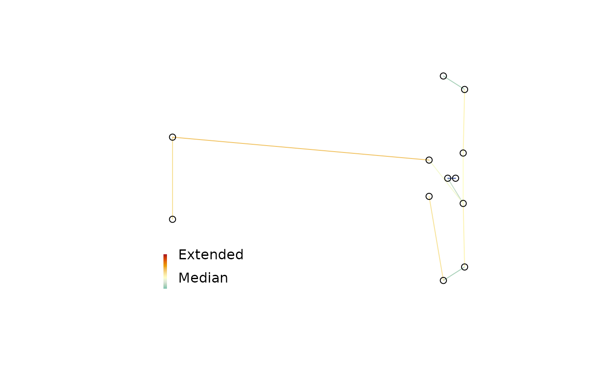

To identify strain in a multidimensional scaling of distances, it can be useful to plot a minimum spanning tree (Gower 1966; Smith 2022) . Colouring each edge of the tree according to its strain can identify areas where the mapping is stretched or compressed.
Usage
MSTSegments(mapping, mstEnds, ...)
StrainCol(
distances,
mapping,
mstEnds = MSTEdges(distances),
palette = rev(hcl.colors(256L, "RdYlBu"))
)Arguments
- mapping
Two-column matrix giving x and y coordinates of plotted points.
- mstEnds
Two-column matrix identifying rows of
mappingat end of each edge of the MST, as output byTreeTools::MSTEdges().- ...
Additional arguments to
segments().- distances
Matrix or
distobject giving original distances between each pair of points.- palette
Vector of colours with which to colour edges.
Value
StrainCol() returns a vector in which each entry is selected from
palette, with an attribute logStrain denoting the logarithm of the
mapped over original distance, shifted such that the median value is zero.
Palette colours are assigned centred on the median value, with entries
early in palette assigned to edges in which the ratio of mapped
distance to original distance is small.
References
Gower JC (1966).
“Some distance properties of latent root and vector methods used in multivariate analysis.”
Biometrika, 53(3/4), 325–338.
doi:10.2307/2333639
.
Smith MR (2022).
“Robust analysis of phylogenetic tree space.”
Systematic Biology, 71(5), 1255–1270.
doi:10.1093/sysbio/syab100
.
See also
Other tree space functions:
Islands(),
MapTrees(),
MappingQuality(),
SpectralEigens(),
cluster-statistics,
median.multiPhylo()
Examples
set.seed(0)
library("TreeTools", quietly = TRUE)
distances <- ClusteringInfoDist(as.phylo(5:16, 8))
mapping <- cmdscale(distances, k = 2)
mstEnds <- MSTEdges(distances)
# Set up blank plot
plot(mapping, asp = 1, frame.plot = FALSE, ann = FALSE, axes = FALSE,
type = "n")
# Add MST
MSTSegments(mapping, mstEnds,
col = StrainCol(distances, mapping, mstEnds))
# Add points at end so they overprint the MST
points(mapping)
PlotTools::SpectrumLegend(
"bottomleft",
legend = c("Extended", "Median", "Contracted"),
bty = "n", # No box
y.intersp = 2, # Expand in Y direction
palette = hcl.colors(256L, "RdYlBu", rev = TRUE)
)
